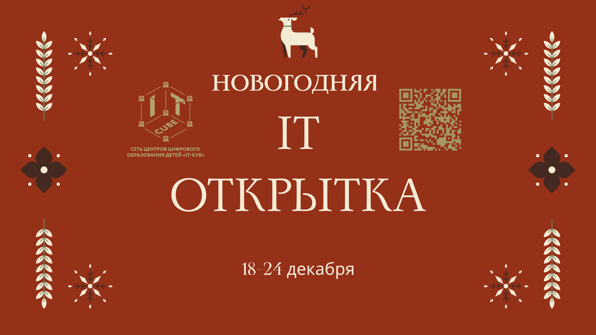

Новогодняя IT-открытка в IT-Кубе
18.12.2025

🎄 Новогодняя IT-открытка в IT-Кубе 🎄
Как поздравить с Новым годом по-настоящему креативно? В Центре цифрового образования детей IT-Куб мы создаём новогодние IT-открытки — яркие, интерактивные и технологичные.
Участников ждёт работа сразу в нескольких форматах:
✨ AR-открытка — ожившая открытка с дополненной реальностью 🎨 Открытка в Figma — современный дизайн и креатив 🧩 Scratch-открытка — интерактивная открытка с анимацией 🖌 Paint-открытка — новогодний рисунок в цифровом формате 🎥 Видео-открытка — поздравление в формате видеоролика 🧊 3D-открытка — объёмные модели и новогодние сцены 🖼 Открытка в Gimp — графика и эффекты для праздничного настроения
🎁 Новый год — отличный повод творить, экспериментировать и открывать для себя IT по-новому!
📍 Центр цифрового образования детей IT-Куб 📅 18 - 24 декабря 📌 Ссылка для регистрации: https://forms.yandex.ru/u/6943be616d2d7323d8d4bb24 Контакты: it-cube61@it-cube61.ru